OS/2 API Trace |
|||||||||||||||||||||||||||||||||
by Dave Blaschke |
|||||||||||||||||||||||||||||||||
|
Last updated October 25, 2010 |
|||||||||||||||||||||||||||||||||
|
OS/2 API Trace allows you to trace the 16-bit and 32-bit OS/2 APIs used by any application running on any 32-bit version of OS/2 (2.0 or later) without requiring the application's source code or requiring the application to be recompiled/relinked. Simply enable the application for tracing and run it, and the OS/2 API calls (and optionally their parameters) made by the application are logged to a text file that is already formatted and in English. OS/2 API Trace also allows tracing to be customized, controlled, and summarized.
Want to learn more about OS/2 API Trace? |
|||||||||||||||||||||||||||||||||
|
|
|||||||||||||||||||||||||||||||||
More About OS/2 API Trace |
|||||||||||||||||||||||||||||||||
|
So you want to learn more about OS/2 API Trace. Choose as many of the following questions that suit your interest:
Who can use OS/2 API Trace? |
|||||||||||||||||||||||||||||||||
|
|
|||||||||||||||||||||||||||||||||
Who can use OS/2 API Trace?Anybody can use OS/2 API Trace, as the only requirement is a basic working knowledge of OS/2. Although OS/2 API Trace will benefit application developers and debuggers the most, it was designed so that even the beginner can utilize it to start comprehending how OS/2 APIs are used as the building blocks of applications running under OS/2. As far as system requirements are concerned, anyone with a 32-bit version of OS/2 (OS/2 2.0 or later) and 2.08MB of available DASD can use OS/2 API Trace. |
|||||||||||||||||||||||||||||||||
|
|
|||||||||||||||||||||||||||||||||
What is OS/2 API Trace?OS/2 API Trace is a freeware application written by a former IBM software engineer with extensive experience in OS/2 kernel and Presentation Manager development. Although originally designed to be a run-time utility that determined the actual API coverage of test programs, it has evolved into a comprehensive and robust tracing application that supports 1989 OS/2 APIs and consists of over 108,000 lines of C and assembly code. This evolution came about in part because the author was unhappy with the complexity of the system trace utility provided with OS/2 and its inherent limitations, especially with regards to dumping structures. OS/2 API Trace can trace 16-bit, 32-bit, and mixed 16/32-bit applications, multi-threaded applications, and applications comprised of an .EXE or .COM, one or more .DLLs, and an .EXE or .COM and one or more .DLLs. The OS/2 API Trace package consists of several executable files, including a command line interface (OS2TRACE.EXE) and a graphical interface (PMOS2TRC.EXE) for enabling/customizing/summarizing tracing, a command line program (CHK4TRC.EXE) that checks for and reports the executable file(s) that are trace-enabled, a command line program (STRIPAPI.EXE) that strips API entries/exits from a trace information file, and many trace DLLs (T_*.DLL). The package also includes several text files that contain helping information such as how to use OS/2 API Trace, the list of OS/2 APIs that are supported, answers to frequently asked questions, and a source code example of a user hook DLL. |
|||||||||||||||||||||||||||||||||
|
|
|||||||||||||||||||||||||||||||||
Where can you get OS/2 API Trace?In addition to this GitHub site, OS/2 API Trace is available elsewhere on the internet including but not limited to: |
|||||||||||||||||||||||||||||||||
|
|
|||||||||||||||||||||||||||||||||
When is OS/2 API Trace updated?OS/2 API Trace is updated whenever the need arises, and changes generally encompass bug fixes, enhancements, and user-requested additions. To make it easier to keep track of the updates, the revision portion of the version number is incremented whenever a change is made, while the major and minor portions of the version number reflect the major and minor version of OS/2 currently supported by OS/2 API Trace. A complete history of OS/2 API Trace changes can be found in the text file OS2TRACE.NWS. While the author maintains OS/2 API Trace on his own personal time, most changes are turned around in five working days or less, although this is, of course, not a guarantee. |
|||||||||||||||||||||||||||||||||
|
|
|||||||||||||||||||||||||||||||||
Why should you use OS/2 API Trace?OS/2 API Trace best serves any of the following purposes:
|
|||||||||||||||||||||||||||||||||
|
|
|||||||||||||||||||||||||||||||||
How does OS/2 API Trace work?Simply put, OS/2 API Trace places itself between your application and OS/2, from where it can monitor all data passed by the application to OS/2 (API input parameters) and all data returned by OS/2 to the application (API return code and output parameters). This feat is accomplished by altering the application so that it references the trace DLLs instead of the OS/2 DLLs. The trace DLLs, which mirror the OS/2 DLLs exactly, can then trace all pertinent information before passing it on to OS/2 or back to the application. If this overview is too simplistic and you are curious as to how you can exploit the many facets of OS/2 API Trace to your benefit, then a more thorough description is in order. Perhaps the easiest way to understand the details of how OS/2 API Trace works is to use an analogy with something that just about everyone is familiar with - the telephone. Let's start by understanding the basics of this analogy. If we look at a house as being like an application, then its occupants are like threads within the application. There is a main thread - the head of the household - and quite often other threads, such as a spouse and children. The occupants can accomplish most of their duties within the house, such as cooking and cleaning, without outside assistance. In the same fashion, an application can accomplish most of its operations on its own, such as data initialization and manipulation. Occasionally, however, an occupant may need help getting something done that none of the other occupants can assist with or that can be better done by an external source, such as plumbing or electrical work. Likewise, an application occasionally needs outside help, such as file or window management. How can this help be obtained? The easiest method for the the occupants of the house is through a telephone call, just like the easiest method for an application is an OS/2 API call. So a telephone call is really like an API call, a "request" to an outside source for help to accomplish something that it cannot accomplish or does not want to accomplish on its own. Where does OS/2 API Trace fit into this analogy? Well, much like a phone tap can listen in on telephone conversations, OS/2 API Trace can listen in on conversations between applications and OS/2. When you use OS/2 API Trace to enable (-ON option) an application for tracing, it's just like inserting a phone tap between the house (application) and the telephone line to the outside world (OS/2). Conversely, when you disable (-OFF option) an application for tracing, it's just like removing the phone tap from the telephone line. As long as the phone tap is present on the telephone line, it can record every outgoing phone call that traverses that line, much in the same way that OS/2 API Trace can trace every API call made by an application while the application is enabled for tracing. Now some houses are equipped with more than one telephone line, so you may have to place a phone tap on more than one line in order to intercept every phone call. Similarly, some applications import APIs from more than one OS/2 DLL, which is why OS/2 API Trace provides both the -dll (akin to inserting/removing tap on one specific telephone line) and the -ALL (akin to inserting/removing taps on all telephone lines) options for enabling/disabling tracing for a specific DLL or all DLLs, respectively. Unlike most phone taps, however, which are simple recording devices that turn on when a phone call is placed and off when the call is terminated, OS/2 API Trace comes fully equipped with additional options that allow the user to customize several different aspects of tracing. For instance, instead of simply recording the entire conversation like a phone tap, OS/2 API Trace can record various amounts of information (-L option): what API was called and the result of the call (level 1), what API was called and the parameters and result of the call (level 2), or what API was called, the parameters and their contents, and the result of the call (level 3). And instead of recording the entire conversation from start to finish like a phone tap, OS/2 API Trace can also pause and resume recording (-C, -PAUSE, and -RESUME options) as many times as needed so that only the desired portion of the conversation is recorded. Finally, instead of disconnecting the phone call after the end of the tape is reached and missing the rest of the conversation, OS/2 API Trace can record all conversations on any tape (-A option) that has sufficient available space. Suppose you want to record more than just the highlights of the conversation because you are interested in some of the details, but you don't want to waste unnecessary tape space recording complete conversations that may drag on and on. Since the general direction of a conversation can usually be determined within the first few minutes, it would be advantageous if the phone tap could record just these first few critical moments of the conversation and ignore the rest. OS/2 API Trace provides this functionality by allowing the user to place an upper limit on the amount of information traced from each buffer (-B option) passed into and/or returned from an API, thereby limiting what is logged to just the desired number of initial bytes. What if you're only interested in finding out the details of one single specific call, but there are so many calls being made that the phone tap's tape might run out before actually capturing the one of interest? It would be advantageous if the phone tap could handle an unlimited number of phone calls, but once the end of the tape is reached it is longer operational. OS/2 API Trace, on the other hand, can handle this possibility by allowing the user to place an upper limit on the overall amount of disk space to use (-F option). Whenever this limit is reached, OS/2 API Trace automatically rewinds to the beginning of the trace information file and records over previous calls, thereby guaranteeing that the most recently made calls will be preserved in the file even if disk space is constrained. This rewinding can happen over and over again until the desired call is captured. Let's say that there is an occupant, such as a teenager, in the house that makes many, many phone calls a day, but you are only interested in recording the calls placed to a specific individual or a select group of individuals. It would be advantageous if the phone tap could filter outgoing calls and limit itself to recording only those calls made to a small select group of individuals, ignoring all of the other extraneous calls. OS/2 API Trace provides this functionality by allowing the user to select a small subset of calls to trace (-D, -G, and -W options) from within DLLs that contain a sometimes unmanagebly large amount of APIs - DOSCALLS.DLL (over 375 APIs), PMGPI.DLL (over 550 APIs), and PMWIN.DLL (over 525 APIs). What about cellular phone calls placed from within the house? A phone tap has absolutely no chance of intercepting and recording such calls because the calls do not traverse any of the telephone lines statically attached to the house that are actually being monitored by the tap. OS/2 API Trace, on the other hand, can handle this possibility by allowing the user to request interception and tracing of dynamic API calls (-I option). Dynamic API calls are those which are dynamically loaded and called by the application at run-time, as opposed to those API calls which are statically bound into the executable file at link-time that OS/2 API Trace normally traces. All phone taps record and replay exactly what is spoken during the course of the conversation, but what if part of the conversation is in Spanish and you only understand English? You'd have to have that portion of the tape translated for you. While OS/2 API Trace cannot provide assistance translating something as complex as human language, it can help with some basic data translation services by allowing the user to request to have character buffers dumped in the EBCDIC format (-E option) in addition to the standard ASCII format. Most phone taps can and usually do record the time a phone call is placed, and some may even be able to record the time the call is ended. OS/2 API Trace provides both capabilities by allowing the user to have all API entries and exits time stamped (-T option) down to an accuracy of one one-hundredth of a second. Finally, after the phone tap is removed from the telephone line, you are left with a tape that contains some unknown amount of information. It would be advantageous if the contents of the tape could be analyzed and a summary produced that included a list of everyone that was called by the occupants of the house and how many times each was called. OS/2 API Trace provides this functionality by allowing the user to request a summary of all the calls made within a trace information file (-S option). This summary is an alphabetical list of every API that was called by the application and how many times each call passed, failed, or didn't return. NOTE: For a more technical discussion on how OS/2 API Trace works, please see the answers to frequently asked questions in OS2TRACE.FAQ. |
|||||||||||||||||||||||||||||||||
|
|
|||||||||||||||||||||||||||||||||
How to Use OS/2 API Trace |
|||||||||||||||||||||||||||||||||
|
So you want to know how to use OS/2 API Trace. Remembering that OS/2 API Trace has four different flavors - trace enabler, trace customizer, trace controller, and trace summarizer - and that it includes a graphical interface, choose as many of the following topics that suit your interest:
Learn how to use OS/2 API Trace Enabler |
|||||||||||||||||||||||||||||||||
|
|
|||||||||||||||||||||||||||||||||
How to Use OS/2 API Trace Enabler |
|||||||||||||||||||||||||||||||||
Syntax |
|||||||||||||||||||||||||||||||||
|
|||||||||||||||||||||||||||||||||
|
|||||||||||||||||||||||||||||||||
|
|||||||||||||||||||||||||||||||||
|
| DOSCALLS | HELPMGR | KBDCALLS | MONCALLS | MOUCALLS |
| MSG | NAMPIPES | NLS | PMBIDI | PMCTLS |
| PMDRAG | PMGPI | PMMERGE | PMPIC | PMSHAPI |
| PMSPL | PMVIOP | PMWIN | PMWP | QUECALLS |
| SESMGR | VIOCALLS |
The same functionality can be obtained with the graphical interface by selecting the "Open file..." item from the "Enable" submenu (see -OFF option for image), selecting an executable file with the "Open Executable File" dialog, and selecting the check box of the desired DLL (see -OFF option for image).
The -P option preserves the executable file's date and time stamp should any enabling/disabling changes be made. The same functionality can be obtained with the graphical interface by selecting the "Preserve file date/time stamp" item from the "Enable" submenu:
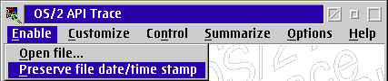
file is the name of executable file (.EXE, .COM, or .DLL) to to be trace enabled/disabled.
OS2TRACE {-A s |-B n |-C f |-D g |-E f |-F n |-G g |-I f |-L n |-Q |-T f |-U s |-W g}...
The -A option specifies the alternative logging directory, where s is the fully qualified drive and path of this directory or NONE to specify the default directory (same as the .EXE/.COM file). The same functionality can be obtained with the graphical interface by selecting the "Alternative directory..." item from the "Customize" submenu:
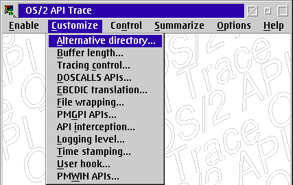
and manipulating the resulting "Alternate Directory" dialog:
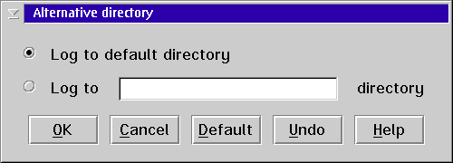
Logging to an alternative directory is especially useful when tracing a .EXE/.COM that resides on a disk drive that does not have sufficient free space available.
The -B option places an upper limit on the number of bytes to log from buffers, where n is a decimal number between 16 and 65536, inclusive, or ALL to log all bytes from buffers. Buffers affected by this option include character, ASCIIZ string, integer, color, FIXED, POINTL, RECTL, WPOINT, and user-defined buffers. The same functionality can be obtained with the graphical interface by selecting the "Buffer length..." item from the "Customize" submenu:
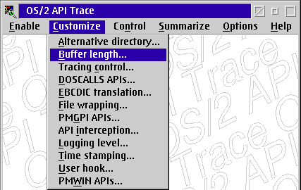
and manipulating the resulting "Buffer Length" dialog:
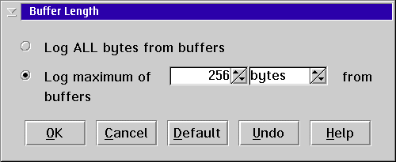
Imposing a limit on buffer length is especially useful when tracing APIs that input and/or output large arrays comprising of:
The -C option enables (if f is ON) or disables (if f is OFF) tracing control. The same functionality can be obtained with the graphical interface by selecting the "Tracing control..." item from the "Customize" submenu:
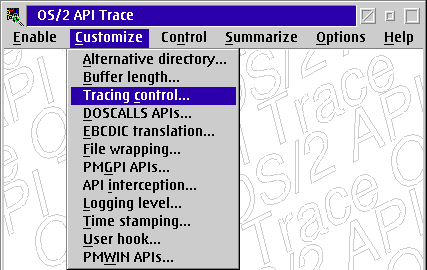
and manipulating the resulting "Tracing Control" dialog:
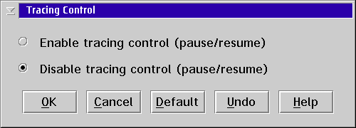
Controlling tracing is especially useful when only interested in tracing a specific behavior of the application, such as opening a file or painting a window.
The -D option traces specific groups of APIs within DOSCALLS.DLL, where g is either ALL[,NOgrp]... or grp[,grp]... and grp is one of the following:
| DEV | FILE | INFO | MEM | MISC | MOD | MSG | MVDM | NLS | PIPE |
| PRF | PROC | PROF | RES | SEM | SES | SIG | SMP | TIME | XCPT |
The same functionality can be obtained with the graphical interface by selecting the "DOSCALLS APIs..." item from the "Customize" submenu:
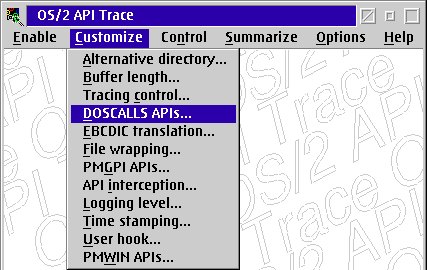
and manipulating the resulting "DOSCALLS APIs" dialog:
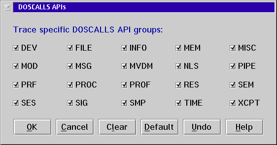
Limiting the number of groups of DOSCALLS APIs is especially useful when only interested in tracing a few specific areas within DOSCALLS.DLL, such as:
The -E option enables (if f is ON) or disables (if f is OFF) the logging of EBCDIC translations of character buffers. ASCII translations of character buffers are always logged. The same functionality can be obtained with the graphical interface by selecting the "EBCDIC translation..." item from the "Customize" submenu:
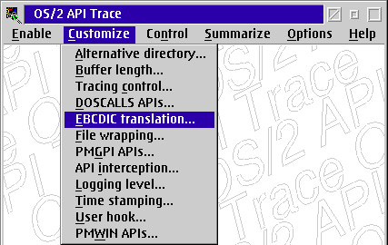
and manipulating the resulting "EBCDIC Translation" dialog:
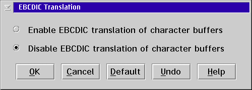
Logging EBCDIC translation of character buffers is especially useful when the contents of character buffers are not guaranteed to be ASCII.
The -F option places an upper limit on the number of bytes to log to the trace information file before file wrapping occurs, where n is a decimal number between 4096 (4K) and 67108864 (64M), inclusive, or ALL to log all information without log file wrapping. The same functionality can be obtained with the graphical interface by selecting the "File wrapping..." item from the "Customize" submenu:
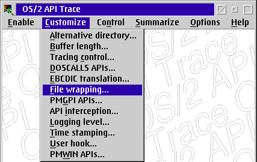
and manipulating the resulting "File Wrapping" dialog:
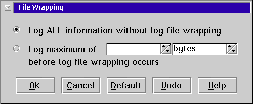
Imposing a limit on log file length is especially useful when tracing large numbers of APIs, when tracing over extended periods of time, or when disk space is limited and only the most recent information is required.
The -G option traces specific groups of APIs within PMGPI.DLL, where g is either ALL[,NOgrp]... or grp[,grp]... and grp is one of the following:
| BIT | CORR | CTRL | DEF | DEV | EDIT | INK | LCID | LCT | META |
| PATH | POLY | PRIM | RGN | SEG | TRAN |
The same functionality can be obtained with the graphical interface by selecting the "PMGPI APIs..." item from the "Customize" submenu:
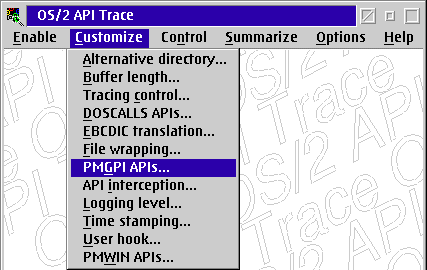
and manipulating the resulting "PMGPI APIs" dialog:
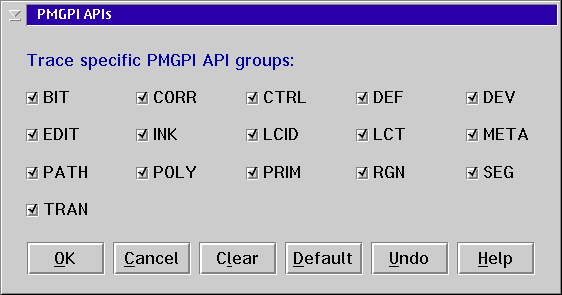
Limiting the number of groups of PMGPI APIs is especially useful when only interested in tracing a few specific areas within PMGPI.DLL, such as:
The -I option enables (if f is ON) or disables (if f is OFF) the interception of dynamic API calls. The same functionality can be obtained with the graphical interface by selecting the "API interception..." item from the "Customize" submenu:
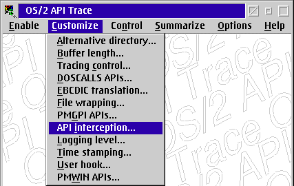
and manipulating the resulting "API Interception" dialog:
Intercepting dynamic API calls is especially useful when tracing applications that seem to be accomplishing much more through the operating system than is evident in the trace file or applications that are backwards compatible across several versions of the operating system.
The -L option sets the level of trace information to log, where:
| 1 | logs API entry/exit information |
| 2 | logs level 1 plus API parameters |
| 3 | logs level 2 plus API parameter contents |
The same functionality can be obtained with the graphical interface by selecting the "Logging level..." item from the "Customize" submenu:
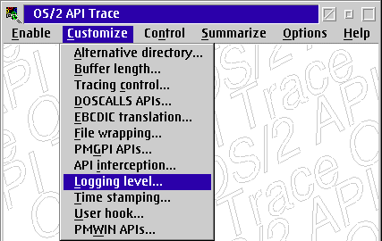
and manipulating the resulting "Logging Level" dialog:
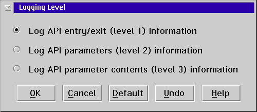
Logging specific amounts of trace information is especially useful when only interested in summarizing trace information (minimum level) or when interested in debugging trace information (maximum level).
The -Q option displays the current state of the trace customization options stored in OS2.INI.
The -T option enables (if f is ON) or disables (if f is OFF) the time stamping of API entries and exits. The same functionality can be obtained with the graphical interface by selecting the "Time stamping..." item from the "Customize" submenu:
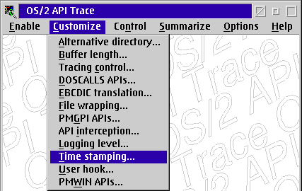
and manipulating the resulting "Time Stamping" dialog:
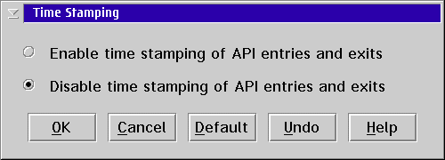
Time stamping API entries and exits is especially useful when tracing over extended periods of time or when tracing multi-threaded applications.
The -U option specifies the user hook, where s is of the format DLLNAME.HOOKNAME directory or NONE for no user hook. The same functionality can be obtained with the graphical interface by selecting the "User hook..." item from the "Customize" submenu:
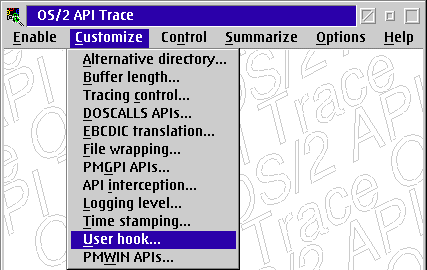
and manipulating the resulting "User Hook" dialog:
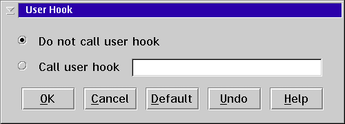
Having a user hook called is especially useful when customized tracing behavior is desired, such as tracing the stack whenever a specific API is entered or logging the amount of memory available after every API is exited. Because the user provides the hook, the user can perform whatever tracing behavior is desired.
The -W option traces specific groups of APIs within PMWIN.DLL, where g is either ALL[,NOgrp]... or grp[,grp]... and grp is one of the following:
| ACCL | ATOM | CLIP | CTRY | CUR | DDE | DESK | DLG | ENV | ERR |
| FRAM | HEAP | HOOK | INPT | LOAD | MENU | MSG | PAL | PTR | RECT |
| SEI | SYS | THK | TIME | TREC | WIN |
The same functionality can be obtained with the graphical interface by selecting the "PMWIN APIs..." item from the "Customize" submenu:
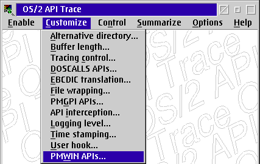
and manipulating the resulting "PMWIN APIs" dialog:
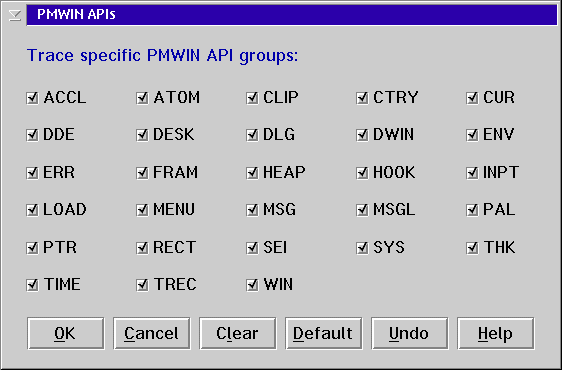
Limiting the number of groups of PMWIN APIs is especially useful when only interested in tracing a few specific areas within PMWIN.DLL, such as:
The -PAUSE option pauses tracing. The same functionality can be obtained with the graphical interface by selecting the "Pause tracing" item from the "Control" submenu:
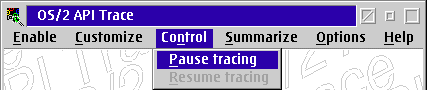
When controlling is complete the following dialog will be presented:
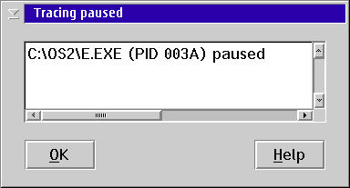
The -RESUME option resumes tracing. The same functionality can be obtained with the graphical interface by selecting the "Resume tracing" item from the "Control" submenu:
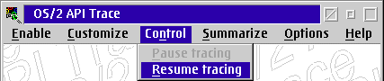
When controlling is complete the following dialog will be presented:
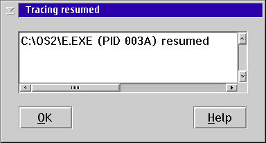
The -S option summarizes API tracing by generating an alphabetical list of the APIs present in a trace information file along with the number of times each passed, failed, and didn't return. The same functionality can be obtained with the graphical interface by selecting the "Open file..." item from the "Summarize" submenu:
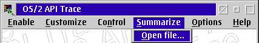
and selecting a trace information file (.TRC) from the resulting "Open Trace Information File" dialog. When summarizing is complete the following dialog will be presented:
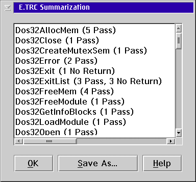
file is the name of trace information file (.TRC) to be summarized.
OS/2 API Trace's graphical interface, PMOS2TRC.EXE, has several options not available to the command line interface, OS2TRACE.EXE, because they are only effective under Presentation Manager programs. Choose as many of the items from the "Options" submenu that suit your interest:
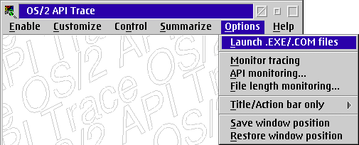
Use "Launch .EXE/.COM files" to enable or disable the launching of .EXE/.COM files. If this menu item is enabled (checked), a dialog similar to the following is presented for launching a .EXE/.COM file whenever any trace enablement changes are made to the file:
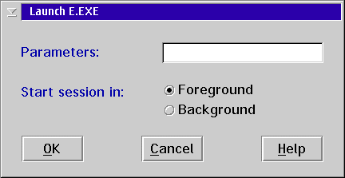
Back to how to use unique options of OS/2 API Trace's graphical interface
Use "Monitor tracing" to enable or disable the monitoring of tracing. If this menu item is enabled (checked), the following trace monitoring information is displayed in the window while a trace-enabled executable runs:
The information displayed is similar to the following when all optional information is included:
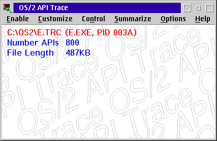
Back to how to use unique options of OS/2 API Trace's graphical interface
Use "API monitoring" to specify the API monitoring frequency (the rate at which the number of APIs is updated) or to disable the monitoring of APIs altogether by manipulating the "API Monitoring" dialog:
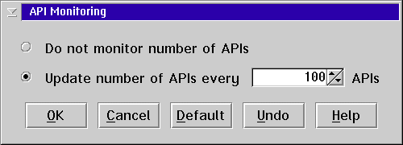
Back to how to use unique options of OS/2 API Trace's graphical interface
Use "File length monitoring" to specify the file length monitoring frequency (the rate at which the log file length is updated) or to disable the monitoring of file length altogether by manipulating the "File Length Monitoring" dialog:
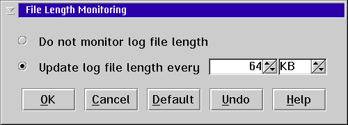
Back to how to use unique options of OS/2 API Trace's graphical interface
Use "Title/Action bar only" to change the window's size such that only the title bar and a single-line action bar are displayed, similar to the following:
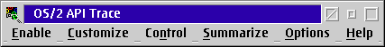
Based on the submenu selection, this resized window can be centered along the top or bottom of the screen or can remain at the current window position:
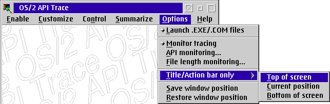
Back to how to use unique options of OS/2 API Trace's graphical interface
Use "Save window position" to save the window's current window position in the operating system's user profile, OS2.INI. This window position is then restored upon future invocations of OS/2 API Trace and when "Restore window position" is used.
Back to how to use unique options of OS/2 API Trace's graphical interface
Use "Restore window position" to restore the window's current window position from the position saved in the operating system's user profile, OS2.INI, by the previous "Save window position" use.
Back to how to use unique options of OS/2 API Trace's graphical interface
The last ten changes made to OS/2 API Trace are described in the following table:
| Version | Date | Description |
|---|---|---|
| 2.45.40 | 25 Oct 10 | Fixed input/output logging of PEAOP and PEAOP2 structures |
| 2.45.39 | 10 Oct 10 | Saved and restored FS register around use in T_GetTID |
| 2.45.38 | 04 May 09 | Added Dos32DumpProcess errors (70000-70026) |
| 2.45.37 | 30 Apr 09 | Fixed displaying null for unknown error within known error range |
| 2.45.36 | 03 Dec 03 | Passed pointer to actual parameters and return code to user hook for WinSetErrorInfo instead of pointer to local copies |
| 2.45.35 | 02 Dec 03 |
Fixed corruption of registers by Dos16CreateThread due to C
run-time thunking code NOTE: IBM's Corrective Service Facility (SERVICE.EXE) expects the contents of registers CX, DX, SI and DI upon entry to Dos16CreateThread to be passed unaltered to the newly created thread's initial dispatch point. |
| 2.45.34 | 10 Jul 01 | Moved C run-time functions from trace DLLs into T_COMMON, resulting in reduction of 488KB from DASD requirements |
| 2.45.33 | 29 Jun 01 |
Added support for public OS/2 2.00 and 2.30 APIs exported from
PMSHAPI that are not included in any public include file:
|
| 2.45.32 | 28 Jun 01 | Added the -U option, which specifies a user hook |
| 2.45.31 | 26 Jun 01 | Added capability of building 32-bit only trace DLLs which do not support 16-bit OS/2 APIs but result in a reduction of 514KB from DASD requirements due to elimination of 16-bit code and data segments |
Download OS/2 API Trace Version 2.45.40 (770KB File)
The author of OS/2 API Trace, Dave Blaschke, can be contacted at deblaschke@yahoo.com. The author appreciates good news (how OS/2 API Trace helped you out) as well as bad (what bugs you found), and will respond in a timely manner to all inquiries as well as requests for enhancements.
Now you know how to contact the author of OS/2 API Trace, back to introduction